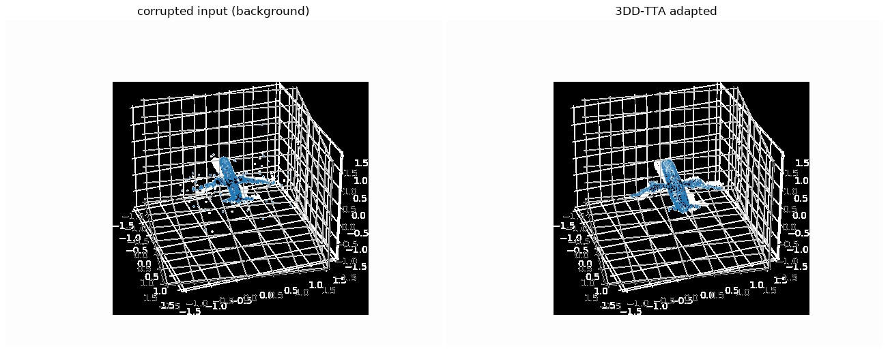

INFERENCE WALKTHROUGH / NOT A REPRODUCTION
去噪能救噪声腐蚀，
救不了旋转。
用作者发布的 LION 扩散先验与 Point-MAE 分类器，先跑通 background 腐蚀的单样本 demo，再把 ModelNet40-c 的 15 种腐蚀全量 2468 个样本跑完。Mean 63.03，仓库 README 列 66.1（论文 Table 2 为 65.7）。10/15 种与 README 差距 ≤1.5 pp；lidar、impulse、density、cutout 偏低 5–12 pp，background 反而高 10 pp。没有训练、没有复算论文的 ShapeNet-c/ScanObjectNN-c，本页不声称复现。
跑了什么
定性 demo：demo_3dd_tta.py，background 腐蚀，sample 11，35 个去噪步（该腐蚀需要更多步），输出腐蚀输入与适配后的两段 GIF。定量：main_3dd_tta.py，ModelNet40-c 全部 15 种腐蚀，batch 16，每种 2468 个样本（2428/2468，无抽样），15 种分 3 张卡并行。对照值是仓库 README 的 3DD-TTA 列（66.1）与 Point-MAE 源分类器列（57.6）。
跑的是「作者权重 + 仓库代码」的推理链路，含数据加载、腐蚀输入构造、LION 编码/去噪/解码、Point-MAE 分类与准确率统计；不训练、不调超参，去噪步数按 README（多数 5 步，background 35 步）。
环境与改动
python 3.8、torch 2.0.1+cu118。机器 /usr/local/cuda 只有 11.4（不支持 sm_89），所以单独放了一套 CUDA 11.8 工具链（cudaenv），运行期固定 CUDA_HOME、CPATH、LD_LIBRARY_PATH 与 TORCH_CUDA_ARCH_LIST=8.9。依赖侧把 diffusers 钉在 0.19.3、huggingface_hub 钉在 0.16.4（新版 hub 与 0.19 不兼容），wandb==0.15.12、setuptools<70。
为跑通做的改动只有三类，均不涉及算法：(1) 两个 CUDA 扩展的 arch 从 8.6 改 8.9；(2) 新增 code/extensions/__init__.py，并把 models_mate/Point_MAE.py:13 里被仓库注释掉的 from extensions.chamfer_dist import ChamferDistanceL1, ChamferDistanceL2 恢复（否则构建分类器必然 NameError）；(3) main_3dd_tta.py 新增 --corruptions 与 --num_samples 便于分组跑。另外加了 run_eval.sh 固定环境变量后转发参数。
扩展状态：chamfer3D、pointnet2_ops_lib、knn_cuda（官方 404，改用社区 fork）编译成功；extensions/emd 能编译但 import 报未定义符号（与 torch 2.0 的 API 不匹配），走查路径不用 EMD，仅记录。
结果
| corruption | 本次 | README 3DD-TTA | README Point-MAE |
|---|---|---|---|
| uniform | 76.6 | 77.5 | 62.4 |
| gaussian | 73.6 | 79.1 | 57.0 |
| background | 59.9 | 49.9 | 32.0 |
| impulse | 68.9 | 80.3 | 58.8 |
| upsampling | 81.5 | 81.8 | 72.1 |
| distortion_rbf | 62.3 | 63.8 | 61.4 |
| distortion_rbf_inv | 64.3 | 66.9 | 64.2 |
| density | 71.4 | 78.5 | 75.1 |
| density_inc | 84.7 | 84.7 | 80.8 |
| shear | 65.6 | 63.7 | 67.6 |
| rotation | 33.0 | 33.4 | 31.3 |
| cutout | 69.8 | 74.7 | 70.4 |
| distortion | 64.6 | 65.2 | 64.8 |
| occlusion | 39.5 | 39.9 | 36.2 |
| lidar | 29.9 | 42.2 | 29.1 |
| Mean | 63.03 | 66.1 | 57.6 |
7 种（uniform、upsampling、density_inc、shear、rotation、distortion、occlusion）与 README 基本一致；background 高 10 pp。偏低最明显的是 lidar（−12.3）、impulse（−11.4）、density（−7.1）、cutout（−4.9），gaussian 低 5.5 pp。这些差距不像随机波动。为排除抽样噪声，另跑 16 张 impulse 小样本，得 68.75%，与全量 68.88% 一致。
背景：README 的 Mean 66.1 与论文 Table 2 的 65.7 本身不一致；本页按 README 列对照。未做的排查包括 lidar/impulse 是否需要额外的 FPS/上采样细节，以及 background 的步数是否应高于 README 的 35。整体不是论文指标的严格复现。
样例

没跑的部分与局限
- 只跑 ModelNet40-c：ShapeNet-c（同源）与 ScanObjectNN-c（真实扫描）未跑，论文 Table 1/3 的数字没有对照。
- 不是严格复现：mean 63.03 vs README 66.1，4 种腐蚀差距 >4 pp，原因未定；没有做论文 Table 4 的逐步耗时测量。
- 只跑分类：没有分割、检测或跨腐蚀顺序的在线序列实验。
- 单机单卡组：15 种腐蚀分 3 张卡并行，batch=16，显存与吞吐未系统记录。
- EMD 扩展不可用：编译通过但 import 失败，不影响本走查路径，但若后续要跑依赖 EMD 的基线需另修。
文件位置
| 路径 | 内容 |
|---|---|
/data1/kxchen/infer-repro/3dd-tta | 代码（官方仓库）+ env/ + cudaenv/ + 数据/权重链接 |
.../code/outputs/qualitative/ | demo 的两段 GIF（腐蚀输入 / 适配后） |
.../code/outputs/quantitative/results.txt | 15 种腐蚀的准确率汇总 |
.../logs/eval_g0.log, eval_g2.log, eval_g3.log | 三组并行的评测日志 |
.../RECORD.md | 完整记录与坑位 |
来源
- 3DD-TTA 论文（arXiv:2411.14495，WACV 2025）与官方仓库。
- 权重：LION（HF xiaohui2022/lion_ckpt）、Point-MAE（作者 Google Drive）。数据：ModelNet40-c（Zenodo 6017834）。
- 本页数字全部来自服务器端
results.txt与logs/；RECORD.md是原始记录。所有结果为小样本/单机走查，不等同论文指标。